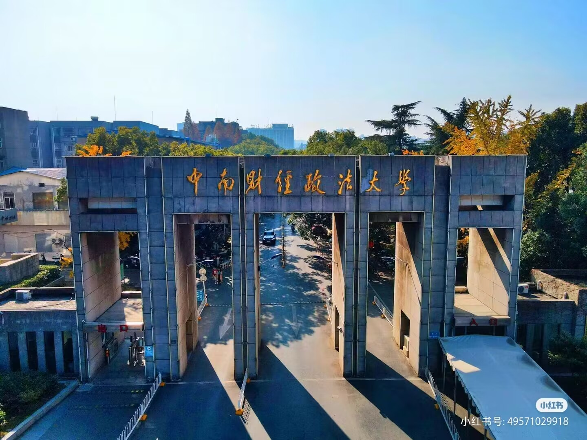
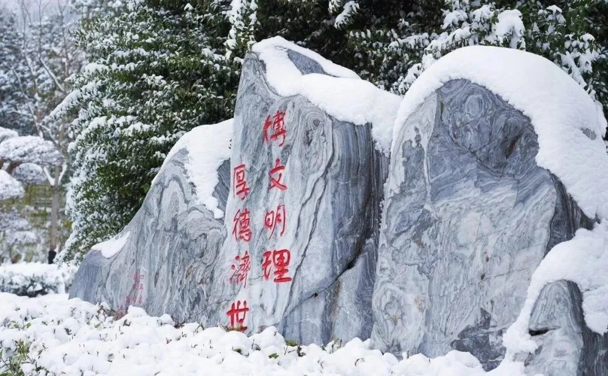
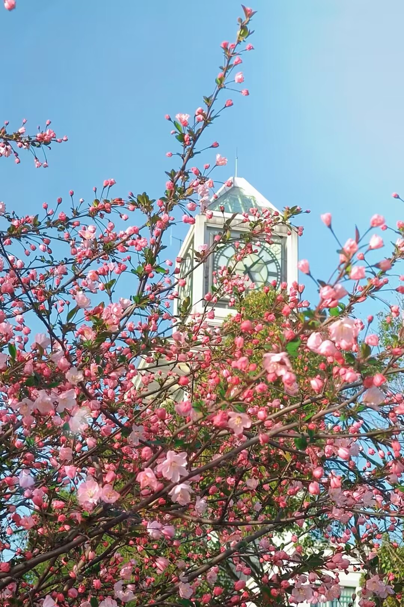

中南财经政法大学
学校简介

中南财经政法大学是中国湖北省武汉市的一所以经济学、法学和管理学为主干的综合性大学。学校源自1948年创建的中原大学,1953年正式成立中南财经学院。2000年,中南财经大学与原武汉大学法学院合并成立了现在的中南财经政法大学。学校设有经济学、法学、管理学、文学、理学、工学、哲学、历史学、教育学、艺术学等多个学科门类,其中经济学、法学和管理学在国内享有很高的声誉和影响力。
学校历史

中南财经政法大学的历史可以追溯到1948年创建的中原大学,1953年在全国高校院系调整中成立中南财经学院,专注财经和法律教育。1978年被国家确定为首批重点建设的财经院校之一,1985年更名为中南财经大学。2000年与武汉大学法学院合并,成立中南财经政法大学,成为以经济、法律、管理为主干学科的综合性大学。如今,学校秉承“博文明理,厚德济世”的校训,不断深化教育教学改革,提升科研实力,扩大国际交流合作,已发展成一所全国重点大学,为社会培养了大量优秀人才。
学校风景

中南财经政法大学校园风景如画，其中九孔桥和晓南湖尤为著名。九孔桥横跨湖面，古朴典雅，如诗如画的倒影在水中流淌，成为学生们喜爱的拍照地标。晓南湖碧波荡漾，湖畔垂柳依依。这些美景不仅为学子们提供了宁静的学习环境，也让校园生活更加丰富多彩。